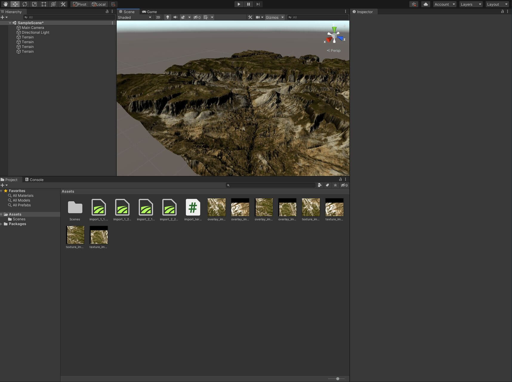

terrainr advertises itself as a package for landscape visualization in R and Unity. This vignette focuses on the Unity half of the equation – specifically, on how to mostly-automatically import tiles into Unity. If you’re interested in the R half of the package, refer to (the overview vignette)[overview.html]. Note that this vignette will assume you already have Unity installed on your computer.
In order to import terrain tiles into Unity, we will first need to have some data worth importing! For the purposes of this vignette, we’ll be using data from the USGS National Map downloaded using get_tiles, but note that you can use any raster data for this process.
First things first, I’m going to use the geocode_OSM function from tmaptools to get the latitude and longitude of Zion National Park, out in Utah. We’ll use this area for our visualization today:
zion <- tmaptools::geocode_OSM("Zion National Park")$coordsOur zion object now contains the x and y coordinates for a spot near the middle of Zion National Park. Let’s go ahead and turn that into an sf object, then use set_bbox_side_length to add a buffer around the point coordinates – we’ll download data for the entire 8 kilometer square around the central point:
library(terrainr)
library(sf)
library(magrittr)
zion <- data.frame(x = zion[["x"]], y = zion[["y"]]) %>%
st_as_sf(coords = c("x", "y"), crs = 4326) %>%
set_bbox_side_length(8000)And now we can go ahead and download data for our area of interest, then merge the downloaded tiles into individual rasters. For more on this process or what these functions do, check out (the overview vignette)[overview.html].
Fair warning – downloading this amount of data can take a bit of time! You can optionally add a progress bar to the get_tiles download by calling library(progressr) and then handlers(global = TRUE) before running this code.
We’ve now got our data downloaded! All that’s left is to import these tiles into Unity.
As of terrainr 0.7.0, the way to do this is via the function make_unity. Assuming you have Unity installed on your computer, we can go ahead and import our terrain into a brand new project, named zion, through the following:
make_unity(
project = "zion",
heightmap = merged_tiles$elevation,
overlay = merged_tiles$ortho
)This will create a new folder, named zion, containing our Unity project. Open that project in Unity, and then open the scene (either using Ctrl+O or File -> Open Scene) named Scenes/terrainr_scene.unity. Double click on one of the terrain tiles and you’ll zoom out to see the entire terrain:

You can now move around your surface by right clicking on the image and moving around with the W-A-S-D keys on your keyboard. Note that your movement speed starts off very slow, and then accelerates over time (especially if you press and hold the “shift” key).
And ta-da, you have a surface in Unity! You can go ahead and customize the scene further (I’ll usually then click on “Directional Light” and change “Render Mode” to “Not Important” and “Shadow Type” to “No Shadows”), fly around and across the scene, or do whatever else you want!